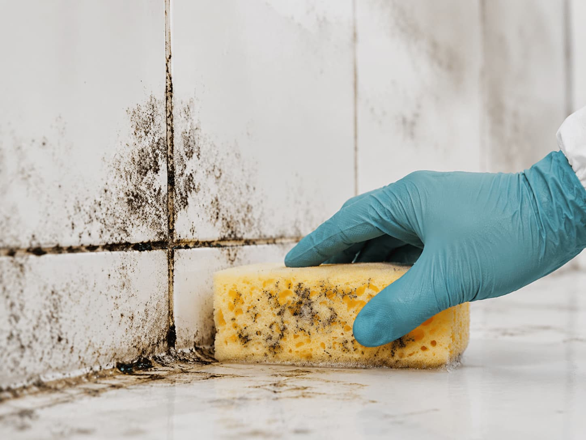

MoldPros helps connect homeowners with provider options, but does not perform mold work directly.
About MoldPros
A calmer way to understand mold remediation options before choosing a provider.
MoldPros helps homeowners compare mold inspection, remediation, black mold removal, and attic or crawl space cleanup options with more clarity from the very first step.
We organize the process around simple service categories, useful property context, and independent provider options — without presenting ourselves as a contractor.
Explore common mold service categories before deciding which local providers to contact.
Compare options, ask questions, and verify provider details before moving forward.
Pricing, warranties, timelines, licenses, insurance, scope, and testing details are confirmed directly with providers.
About MoldPros
Built to make the first step of a mold remediation request feel clearer.
MoldPros helps homeowners move from a stressful search to a more focused comparison. Instead of guessing where to start, you can understand the service category, share useful property context, and review independent provider options with more confidence.
Start with clarity
Choose the mold service type that best matches your concern, affected area, or property condition.
Compare with context
Provider options become easier to review when the request includes moisture history, access details, and service goals.
Stay in control
Confirm license, insurance, testing process, containment scope, pricing, timelines, and warranty terms directly before hiring.
How MoldPros helps
Choose where your mold request starts.
Every homeowner begins from a different point: a musty odor, visible staining, water damage history, attic humidity, or simply uncertainty. MoldPros helps turn that first concern into a clearer provider conversation.

I know what service I need
If you already know the category — inspection, remediation, black mold removal, or attic and crawl space cleanup — MoldPros helps organize that request into a cleaner provider comparison.
Before submitting
Better context creates a clearer mold provider conversation.
A mold request becomes easier to compare when the basic details are clear from the beginning. Affected area, visible staining, odor, moisture history, prior leaks, property type, access details, and timing help independent providers understand the request before responding.
MoldPros keeps this step simple: homeowners share enough context to start, then confirm pricing, license, insurance, testing procedures, containment methods, warranty terms, timelines, and final agreements directly with providers.
Describe the concern
—
Add property context
—
Compare with clarity
What matters
Clear language. Better context. No misleading contractor claims.
MoldPros is built around trust, clarity, and neutral comparison. The goal is to help homeowners understand their options without confusing the platform with a direct mold remediation contractor.
We avoid direct contractor claims and keep positioning transparent. MoldPros connects homeowners with independent provider options.
Service pages are built around real homeowner needs: inspection, remediation, black mold concerns, and attic or crawl space cleanup.
A simplified form helps homeowners describe the affected area, moisture history, odor, visible staining, and timing before comparing provider options.
MoldPros is not a contractor. Homeowners compare providers and verify license, insurance, testing process, pricing, timelines, scope, and warranties directly.
Start comparing
Ready to see which mold service category fits your property?
Browse the service categories or send a compact request to start comparing independent local provider options.